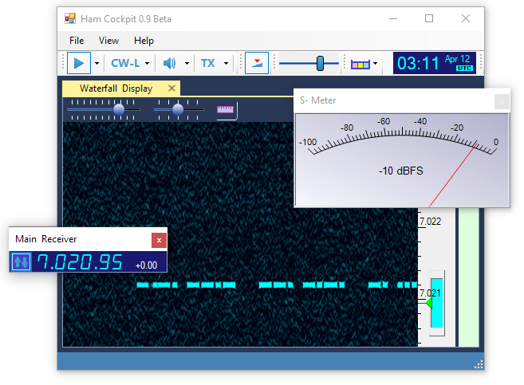

Ham Cockpit
Radio Amateur's integrated environment
Copyright © 2020 Alex Shovkoplyas VE3NEA
freeware
Tested on Windows 10, but may work on the earlier versions of Windows as well. Please try and let me know!

Ham Cockpit
Ham Cockpit is a program of a new type. All of its functions are implemented in the plugins, the main program simply loads the plugins and helps them work together. Some standard plugins come with the software, a wide variety of optional and third party plugins will hopefully be available soon.
Due to the modular approach taken to the extreme, Ham Cockpit becomes an integrated environment for a Radio Amateur that every user can build according to his needs. By installing the right plugins, one will be able to turn the program into an SDR client, a logger, a cluster monitor, a propagation prediction tool, etc., etc. - or have any combination of these working together in one program (once the corresponding plugins are available).
Ham Cockpit 1.0
This is the very first release of Ham Cockpit, it includes only a handful of plugins that turn it into an SDR client. Moreover, this version has drivers only for the ICOM IC-7610 radio, making use of its I/Q streaming capability, and Afedri-822x SDR. Don't worry, the drivers are just plugins, more radios will be supported soon.
Note
Despite the small number of currently available plugins, the program in its present state is an ideal tool for cracking CW pileups that I am already using on the air. I built it as part of my preparation to work 3Y0I, the only announced DXpedition to a country on my needed list. At 330 DXCC entities confirmed, I need just one more to win the Honor Roll award, so I did my best to get the right tool for the job.
Third Party Developers
All software developers are welcome to create their own plugins for Ham Cockpit: open source, freeware, shareware - your choice.
If you have an idea of a new signal processing algorithm, it will be much easier for you to create a plugin that implements it than to build a stand alone application with its own audio input and output, radio control, settings dialog, etc. In a plugin, you will just write the interesting part and let Ham Cockpit do the rest.
What kinds of plugins can you create? Not just the signal processing ones. Any function useful for Radio Amateurs could become your next plugin. QSO logging, cluster monitoring, award tracking, propagation prediction, contesting, SO2R operation - the choice is limited only by your imagination.
A short Plugin Developer's Guide is now available for those who want to start writing plugins. I am working on a complete set of plugin API documentation, including the source code of selected plugins.
Non-programmers are also welcome to participate in the Ham Cockpit project. You can help with documentation, tutorials, video demos or data preparation. One area where data needs to be prepared is band plans. Currently we have only one band plan, for the Ham bands in the USA and Canada. We need band plans for other countries, broadcasting band plans, UHF band plans, etc.

 ,
,